나폴레옹 당시의 포병
게시: 2017-08-22T22:19:47+09:00
나폴레옹이 포병 전술의 귀재라고들 합니다만, 사실 제가 아는 한에서는 나폴레옹이라고 다른 유럽 국가에 비해 색다른 포병 전술을 썼던 것은 아닙니다. 당시 프랑스만 뛰어난 성능의 대포를 쓴 것도 아니었고, 나폴레옹이 뭔가 특별한 포병 전술을 직접 개발한 것도 아니었습니다. 다만, 나폴레옹의 포병들은 집중된 포병대의 기동성 있는 운용을 꽤 중요시했습니다. 많은 대포를 집중시킨 포병단을 신속히 이동시키고 집중적인 화력을 퍼부어 적을 뒤흔들어놓고, 그래서 생긴 틈으로 또 다시 신속하게 이동하는 식이었습니다. 이것이 가장 극적으로 이루어진 전투가 2개의 포병단이 번갈아 가며 러시아군을 향해 돌격한 프리틀란트 전투입니다. 그러나 이건 나폴레옹이 고안한 것이 아니라 세나르몽 (Alexandre-Antoine Hureau de Sénarmont) 장군이 단독으로 벌인 작전이었고, 정작 적군에게 단독으로 돌격하는 포병들을 지켜보던 나폴레옹은 '저것들이 지금 러시아군에게 투항하는건가?'라며 놀랐다고 합니다.
나폴레옹만이 기동력있는 포병을 썼던 것은 아닙니다. 다만, 당시가 소위 말하는 '기동 포병'이 본격화되는 시기였던 것은 맞습니다. 그 이전 시대의 포병은, 워낙 대포가 크고 무겁다보니, 전투 내내 무슨 일이 벌어지든, 한번 자리를 잡으면 그 자리에서 꼼짝 안하고 그냥 쏘아대는, 앉은뱅이였습니다. 당시 대포가 그렇게 크고 무거웠던 것은 기술의 한계였습니다. 먼저 대포 포강을 주조 방식으로 만들다보니, 포 구경도 완벽하게 조정할 수가 없었고, 또 포탄의 구경도 그냥 되는 대로 포구 속에 들어가기만 주워다 쓰는 정도였습니다. 그러다보니, 유극(포강과 포탄 사이의 간격)이 너무 커서, 많은 양의 화약 폭발 가스가 새나갔기 때문에, 대포의 사정거리도 짧았고, 또 그만큼 더 많은 화약을 장전해야 했습니다. 그러다보니 혹시라도 대포가 폭발할까봐, 대포 약실의 두께도 훨씬 더 두꺼워야 했었지요. 결국 이런 대형 대포는 주로 요새 공격에나 쓸 수 있는 물건이 되어 버렸습니다.
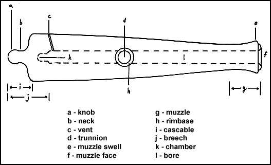
그러다가 기술이 발달하여 포강을 정밀하게 깎아내는 방식으로 만들게 되면서, 훨씬 정밀하게 포 구경을 만들어 낼 수 있었고, 포탄도 표준화되면서 유극도 예전보다 줄었습니다. 이렇게 해서 대포의 경량화가 가능해졌고, 비로소 보병의 움직임에 맞추어 움직이는 기동 포병이 가능해지게 되었습니다. 사실 나폴레옹 이전에, 18세기 중반 프랑스의 그리보발 장군이 이런 기동 포병의 토대를 닦았습니다.
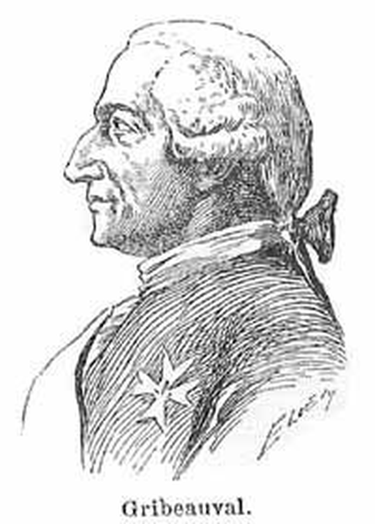
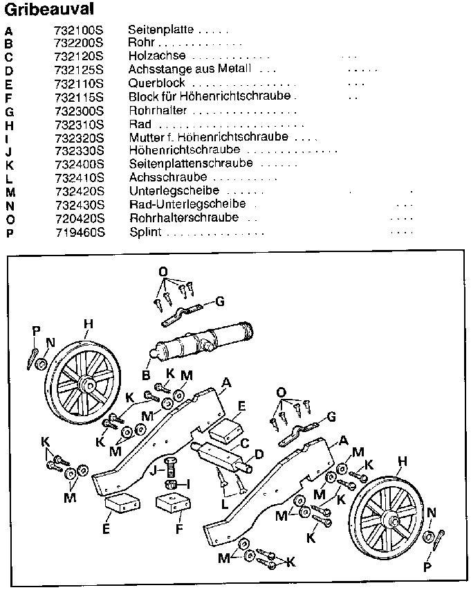
이렇게 경량화된 야포의 대표적인 것은, 영국군에서는 보통 galloper라고 불리웠던, 말이 이끄는 8파운드 짜리 대포알을 쏘는 경포였습니다. Bernard Cornwell이라는 영국 작가가 쓴, Sharpe 시리즈라고 불리는 소설 시리즈가 있습니다. 나폴레옹 전쟁 당시의 영국 육군 장교의 이야기를 그린 것인데, 숀빈 (반지의 제왕에서의 보로미르) 주연으로 BBC에서 드라마화되어 우리나라 유선 방송에서도 방영된 바 있습니다. 아직 우리나라에서는 출판되지 않았고요. 이 소설 중 하나에서 이 galloper 경포의 운용 모습을 볼 수 있습니다.
Sharpe's Waterloo by Bernard Cornwell (배경: 1815년 벨기에) -----------------------------------------------
존 로젠데일 경은 혼란스러웠다. 원래 장교들이 자신감넘치는 큰 목소리로 명령을 내리고, 병사들은 그 명령에 따라야 했고, 그러면 적군은 당연히 그 행동에 따라 격퇴되는 것이 전투라고 생각했다. 그러나 지금 그는 후퇴의 혼란에 휩싸여 있었다. 하지만 이상하게도, 병사들은 이 혼란 속에서도 자신들이 해야 할 역할을 잘 알고 있는 것처럼 보였다. 그는 경포병 한부대가 대포를 말에서 떼어내고 사격 준비를 하는 것을 보았다. 아무도 명령을 내리지 않았지만, 포병들은 뭘 해야 할지를 정확히 알고 있었고, 그것도 아주 경쾌하고도 익숙하게 해냈다. 사격을 하고는 다시 대포를 말에 붙들어매고 다시 미친듯한 질주를 하며 빗속을 뚫고 나갔다.
한번은, 거의 홍수에 가깝게 쏟아지는 폭우 속에서, 누군가 자기를 향해 '빌어먹을 엉덩이를 당장 치우라고' 외치는 소리를 듣고, 황급히 말을 길 옆으로 비켰는데, 놀랍게도 그렇게 말한 사람은 겨우 일개 하사관이었다. 1초 뒤에 말이 끄는 경포가 진흙탕을 튀기며 로젠데일 경이 서있던 자리에 정차했다. 10초 뒤에 포병들은 포를 발사했는데, 로젠데일 경은 그 포 소리가 하도 크고, 뒤로 튕겨져 나오는 포신의 동작이 너무 심해서 깜짝 놀랐다. 로젠데일 경이 여태까지 본 포격은 하이드 파크에서 행해지는 예식 사열이 전부였는데, 거기서는 반짝이는 대포들이 그저 펑하고 알맞은 소리를 내었고, 포신도 거의 움직이지 않았었다. 물론 그 포에는 대포알도 들어있지 않았기 때문이었다. 하지만 이 더럽고 진흙투성이에 검게 그을린 무기는 폭음과 불꽃을 토해내며 폭발하는 것 같았다. 그 대포의 바퀴는 진흙바닥에서 껑충 튀어올랐고, 포가는 마치 쟁기처럼 바닥에 깊은 두렁을 만들었다. 그러고는 몇톤이나 되는 금속과 목재가 바닥에 콰당하고 떨어지자, 진흙으로 뒤덮인 포병들이 스폰지와 밀대로 이 연기나는 짐승에 재장전을 했다.
하지만, 우습게도, 발포의 격렬함에 비해 대포가 입히는 손상은 너무 약소해보였다. 로젠데일 경은 대포알이 떨어지는 것을 보았는데, 그저 진흙이 한무더기 튀어오를 뿐이었다.
--------------------------------------------------------------------------------------------------------
왜 저렇게 위력이 형편없었을까요 ? BBC에서 영화화된 Sharpe 시리즈도 그렇고, 우리나라에서도 임진왜란 다룬 드라마를 보면, 대포알이 떨어지는 곳에서는 으례 큰 폭발이 일어나면서 주변의 적병들이 팝콘 튀듯 튕겨져 나가곤 하는데 말입니다. 사실 대개 그런 장면은 잘못된 고증으로 그런 것입니다만, 꼭 틀린 것만은 아닙니다.
당시 육군에서 사용되던 포탄은 크게 나누어 3가지였습니다.
1. Roundshot
이건 글자 그대로, 둥근 쇳덩어리였고, 성벽을 부수거나, 먼거리에 있는 적의 밀집 대형을 공격할 때 사용했습니다. 가장 일반적인 대포'알'이었습니다. 요즘 탄환을 셀 때, 영어로 round라고 표현을 하는데, (가령 6발이다 하면 six rounds) 바로 이 roundshot에서 유래된 것입니다.
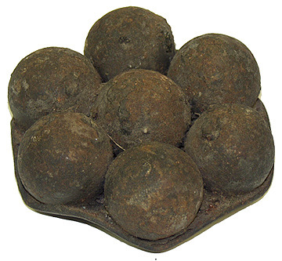
2. Canister
우리말로는 산탄 정도가 됩니다. 적의 보병대가 포병대 가까운 곳까지 전진해오면, roundshot 대신 이 canister를 발사했습니다. 이 캐니스터라는 것은 얇은 깡통안에 쇳조각, 머스켓 총알, 잔돌조각 등을 잔뜩 채워놓은 것인데, 발사하면 그때의 충격으로 포구에서부터 깡통이 찢어져서 거대한 산탄총 역할을 했습니다.
종종, double shot 이라는 것을 쓰기도 했습니다. 즉, 화약포는 하나만 집어넣되, 먼저 roundshot을 집어넣고 그 위에 canister를 또 장전하는 것입니다. 적이 아주 근접했을 때는, 비록 사정거리는 좀 떨어지더라도, 꽤 위력적이었겠네요.
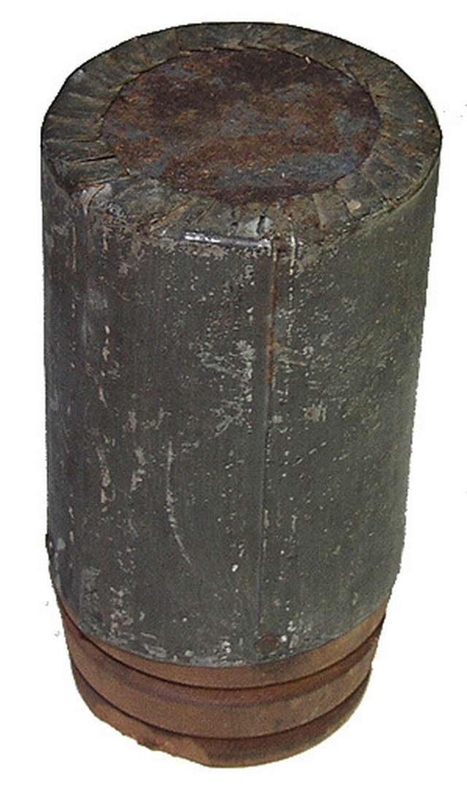
3. Shell
이건 속에 화약이 들어있는 폭발탄입니다. 이때는 아직 충격신관이 없었으므로, 땅에 떨어질 때 폭발하는 것이 아니라, 그야말로 불붙인 도화선의 길이에 따라 폭발 시간이 정해졌습니다. 대개는 도화선 길이를 잘 잘라서, 적군의 바로 머리 위에서 폭발하도록 조절했습니다만, 그건 쉬운 일은 아니었습니다. 너무 짧게 자르면 허공에서 터져 버렸고, 너무 길게 자르면 흙에 파묻히면서 도화선의 불이 꺼져 폭발하지 않기도 했습니다. 특히 비오는 날에는 불발탄이 더 많았다고 합니다. 이 포탄은 주로 박격포나 곡사포 등 포물선을 크게 그리는 대포에서 사용되었으므로, 그리 많이 사용되지는 않았습니다. 비록 곡사포라고 해도, 이 shell이라는 폭발탄은 절대 아군 보병 머리 위를 날아지나가도록 쏘지는 않았습니다. 폭발탄이 의도한 것보다 먼저 점화되어 아군 머리 위를 날아가는 동안 폭발해버리는 경우가 종종 있었기 때문이었습니다. 그래서 당시 포병들은 아군 보병 저 멀리 뒤쪽에서 쏘기 보다는, 오히려 보병들 앞쪽 또는 어깨를 나란히 한 옆쪽에서 싸우는 경우가 많았습니다.
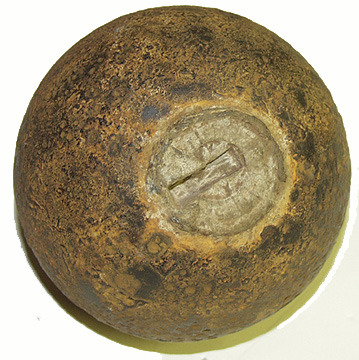
위에서 말한 것들 외에도, 몇가지 별종 포탄들이 있었습니다.
Grapeshot 이라고 하는 것은, 우리 말로는 포도탄이라고 합니다. 이건 캐니스터와 비슷한 포탄인데, 주로 해군에서 사용되었습니다. 아무 것도 없는 허허벌판을 걷는 보병들을 노리는 캐니스터와는 달리, 포도탄은 두꺼운 목재로 된 뱃전(gunwale)이나 해먹을 말아 만든 일종의 모래주머니 뒤에 숨은 적의 수병 및 해병들을 살상하기 위한 것이었으므로, 그런 엄폐물을 뚫기 위해 좀더 알이 굵었습니다.
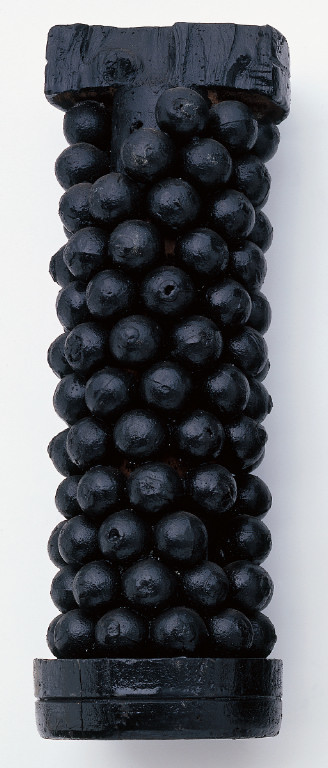
또, 당시 영국군만이 가지고 있던 비밀 무기, shrapnel도 있습니다. 아마 shrapnel하면, 영어로 파편이라는 뜻의 보통 명사 아니냐라고 생각하시는 분이 많을 것입니다. 사실 그 shrapnel이라는 단어는, 영국군 포병 장교였던 Shrapnel이라는 사람에게서 유래된 단어입니다. 당시 폭발탄인 shell은, 속에 흑색 화약이 들어있었기 때문에 폭발력도 뭐 그다지 위력적이지 않았고, 또 파편도 몇개 생기지 않았습니다. 또, 캐니스터 탄은 최대 200~300m 정도의 사정거리를 가질 뿐이었고요. Shrapnel이라는 포병 장교는, 자기 돈을 쏟아 부어가며 shell 탄과 캐니스터 탄의 결합을 연구해서 파편 폭발탄을 만들어냈습니다. 즉, 일반 shell 탄 속에 머스켓 총탄을 잔뜩 쟁여 넣어, 1km 이상되는 먼 거리를 날아가서 캐니스터 탄이 폭발하는, 사거리와 파편 효과를 다 가진 신형탄을 만들어 낸 것이지요. 이때가 대략 1784년 정도였는데요, 정작 이것이 영국 육군에 정식으로 채택된 것은 1803년, Shrapnel이 육군 중장으로 승진한 다음의 일이었습니다. 게다가 실전에 쓰이기 시작한 것은 1808년, 영국군이 스페인에서 프랑스군과 전투를 벌일 때였습니다. 웰링턴 공작도 이 포탄의 위력에 무척이나 깊은 인상을 받았다고 합니다. 아래 구조도를 보시면 아시겠지만, 우리나라의 비격진천뢰와 거의 비슷합니다. 다만 비격진천뢰보다 약 200년 정도 늦은 것이지요. 여러분, 우리나라의 앞선 기술력에 자부심을 가지시길 바라며, 또 동시에 그런 앞선 기술을 계승 발전 시키지 못한 것을 부끄러워 합시다. 아무튼 Shrapnel은 이 발명으로 자기 가문의 이름이 영어 사전 보통 명사로 실리는 불멸의 영광을 누리게 됩니다.
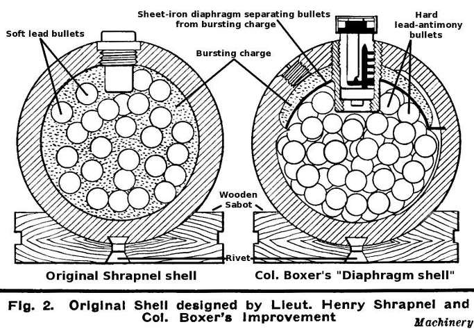
대포의 종류도 나름대로 다양했는데, 해군에서는 더 다양했습니다만 육군에서 사용되던 것은 대략 다음과 같이 3가지 종류로 나누어집니다.
1. Cannon
그냥 대포입니다. roundshot과 canister를 쏠 수 있습니다. 주로 우리가 영화에서 많이 보는 것들이 이 종류입니다.
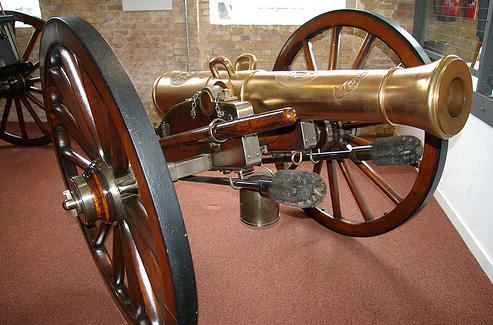
2. Howitzer
곡사포입니다. 생김새가 cannon과는 좀 틀린데, cannon보다 좀 짧고, 포구는 크게 위를 향합니다. 구경이 꽤 큽니다. 주로 shell을 쏘았습니다. 공성전을 벌이거나 적의 밀집 대형에 shell을 정확히 집어던질 때 사용했습니다.
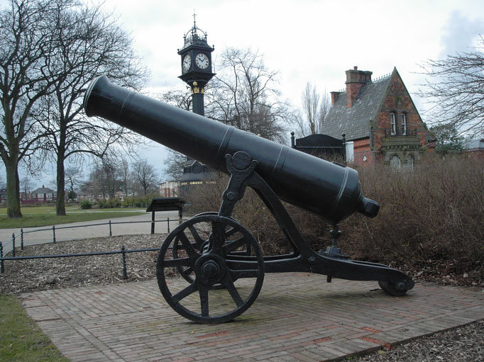
3. Mortar
박격포입니다. 역할은 howitzer와 비슷하여, 주로 shell을 쏘았습니다. 다만 생김새가 더 짧고 굵었습니다. 또, Mortar가 훨씬 더 높은 포물선을 그리기 때문에, 포탄이 떨어질 때는 거의 직각으로 떨어졌습니다. 그래서 적의 참호나 요새를 공격할 때 아주 효율적이었다고 합니다. Howitzer는 주로 야전에서 보병을 공격하기 위한 대포였던 것에 비해, mortar는 주된 용도가 공성전을 위한 포격이었습니다. 따라서, 아예 바퀴도 없이, 땅을 파고 자리를 잡은 상태에서 포격을 했습니다. 요즘의 박격포처럼 사람이 짊어지고 이동할 수 있는 물건이 아니었지요.
사실 당시 병사들도 이 howitzer와 mortar를 잘 구별하지 못했습니다. 위에서 언급한 Sharpe 시리즈 중에서, "Sharpe's havoc" 편을 보면, 언덕 정상의 작은 망루에 농성 중인 샤프의 소대를 공격하기 위해 프랑스군이 대포를 불러옵니다. 이때 샤프는 그 모습을 보고, 저것이 howitzer면 자기들이 살 가능성이 있고, 만약 mortar면 우린 다 죽었다라고 걱정합니다. 밑에서도, 프랑스군 대령이 howitzer가 왔으니 이제 니들은 죽었다 라고 생각하지만, 정작 포를 끌고온 젊은 프랑스군 포병 장교는 "아, 이야기를 듣고 보니 대령께서 원하신 건 mortar지만, 이건 howitzer입니다."라고 말하여 대령을 헷갈리게 하는 장면이 나옵니다.
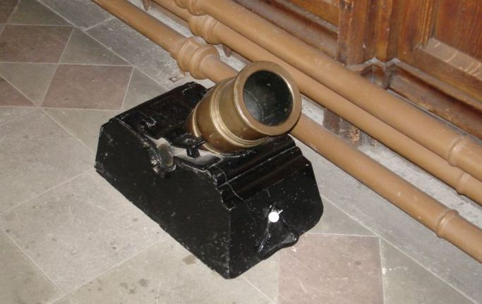
당시 대포를 운용하려면 생각보다 많은 장비와 인력이 필요했습니다. 영국군의 경우, 보통 하나의 포대 (battery)는 6문의 대포로 구성되었는데, 이 6문의 대포를 운용하기 위해서는 무려 172명의 병사와 164마리의 말이 필요했습니다. 이렇게 많은 인원이 6문의 대포를 이용해서 1분 동안 발사할 수 있는 포탄의 수는 빨라야 겨우 12발, 즉 이미 장전되어 있던 것을 한발 쏜 뒤 1분간 재장전하여 다시 쏘는 정도였습니다. 영국군이 콘그리브스 대령의 제의에 따라 로켓 포대를 개발한 것도, 로켓 포대는 발사 가능한 화력에 비해 사람과 말의 필요숫자가 훨씬 적었기 때문이었습니다. 그러나 콘그리브스 로켓은 결국 명중률이 너무 낮아서 많이 쓰이지는 않았습니다.
왜 이렇게 당시 대포는 발사 속도가 떨어지고, 또 많은 인원을 필요로 했을까요 ? 뭐 인원이 많은 것은 이해가 가실 겁니다. 그 무거운 대포와 포탄, 화약을 끌고 신속하게 움직이려면 많은 수의 말과 포가, 마차가 필요했을 겁니다. 그 대포와 말, 포가, 마차를 운용하려면 사람 숫자가 많아집니다. 그 외에도, 당시 대포의 장전 및 발사 절차가 요즘보다는 많이 불편했습니다.
1. 원위치로 밀기 (Re-positioning)
당시 대포는 완충장치가 전혀 없었으므로, 한번 발사하고 나면 그때마다 포가가 뒤로 심하게 튕겨지듯 밀려나옵니다. 이걸 포병들이 달라붙어 원위치로 굴려가야 했습니다. 평상시에도 힘든 일이었지만, 특히나 비가 온 뒤 질퍽해진 진흙 바닥에서 이렇게 포를 굴리려면 정말 힘이 많이 들었을 것입니다.
2. 청소하기 (Swabbing)
전에 장전된 포탄을 발사하고 나면, 먼저 물에 적신 양털뭉치 등이 달린 장전봉(rammer)으로, 대포 포구로부터 약실 저 안쪽까지 한번 꾹 밀어줍니다. 전에 쏘았던 화약에 의해 대포가 뜨거워져 있고, 또 아직 폭발하지 않은 잔존 화약에 불씨가 남아있을 수 있기 때문에 그걸 식혀주기 위해서였습니다. 이렇게 물에 적신 장전봉으로 포강 내를 냉각시켜주지 않으면 다음번 화약을 밀어넣을 때 그 화약이 뜻하지 않게 폭발해버리는 수가 있었습니다. 이를 cook-off 라고도 합니다. 따라서 만약 한창 전투 중에 대포 옆에 놓인 나무 물통이 엎어지기라도 한다면, 누가 다시 물을 채워올 때까지 그 대포는 발사를 못할 정도로 저 나무 물통은 중요한 대포의 부품이었습니다.
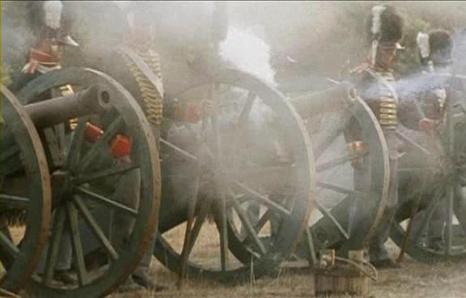
당시 보병들의 개인 화기였던 머스켓 소총도 당시 대포와 비슷한 구조였는데, 머스켓을 장전할 때는 물로 적신 장전봉을 쓰지 않았습니다. 머스켓 소총에서는 cook-off 현상이 없었을까요 ? 대개 없었는데, 이유는 머스켓 소총이 그렇게 뜨겁게 달아오를 정도로 연속 사격을 할 경우가 많지는 않았기 때문이었습니다. 다만 가끔은 정말 그렇게 머스켓 소총이 뜨거워져 재장전을 못할 정도로 열렬한 총격전이 벌어지기도 했습니다. 그럴 때는 어떻게 했냐고요 ? 당시 병사들의 수기를 보면 소변으로 식혔다고 합니다. 당시 병사들은 개인 수통을 휴대하지 않은 경우가 많았거든요.
다시 대포 이야기로 돌아와, 이렇게 장전봉으로 포강 내를 식혀줄 때, 포수는 반드시 가죽 골무를 댄 엄지손가락으로, 점화구(touchhole)를 막아야 했습니다. 그러지 않을 경우, 포신 속에 남아있는 화약이, 아직 뜨거운 포신 속에서, 장전봉이 밀어내는 공기에 의해 점화될 수 있기 때문이었습니다. 이렇게 작은 폭발이 일어나면, 장전봉을 밀던 포병이 다치는 것은 물론, 청동으로 된 점화구를 손상시킬 수 있었습니다. 사실 이 청동제 점화구는 수명이 짧아서, 이 부분만 자주 교체해주어야 했습니다.
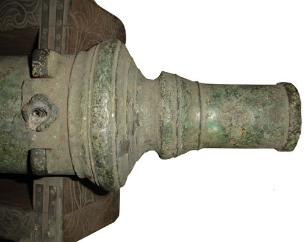
이 점화구는 당시 대포 중에서는 정말 핵심 부품이었습니다. 당시의 기병대는 안장 가방에 작은 망치와 구리로 된 못을 휴대하는 경우가 종종 있었습니다. 이는 바로 적의 대포를 노린 것이었습니다. 즉, 기병의 장점을 십분 활용하여, 전방에 노출된 적의 포병대를 유린한 경우, 적의 예비 병력이 몰려오기 전에 지친 말을 끌고 퇴각을 하기 전에 해야 할 일이 있었습니다. 즉, 적의 대포를 못쓰게 하는 것이지요. 문제는 어떻게 ? 당시 대포는 워낙 구조가 간단하다보니, 망가뜨리는 것도 쉽지가 않았습니다.
이때 망치와 못이 필요합니다. 즉, 구리로 만든 무른 못을 점화구에 틀어막고 망치질을 해서 못이 점화구를 꽉 틀어막도록 하는 것입니다. 일종의 리벳질을 해놓는 거라고 보시면 됩니다. 이렇게 점화구가 막힌 대포는, 정말 환장할 정도로 쓸 모가 없었습니다. 여러가지 공구를 써서 그 무른 구리못을 뽑아내기 전에는요. 최소한 그날 반나절 그 대포는 전장에서 쓸모가 없어지는 것이었습니다.
3. 장전 (Loading)
그러고나면, 미리 캔버스 천으로 된 주머니에 정량을 담아둔 화약을 장전봉으로 밀어넣습니다. 이어서 지푸라기같은 섬유질로 된 마개(wadding)를 역시 밀대로 집어넣고, 그 다음에 포탄을 밀어넣습니다. 이 wadding은, 당시 포탄은 대포 구경과 딱 일치하지 않았으므로 그 사이에 약간의 틈(유극)이 생기기 마련이었는데, 화약의 폭발가스가 그 틈을 통해 헛되이 빠져나가지 못하게 하는 역할을 했습니다. 대개 이 wadding은 불이 붙은 채 포 전방 얼마 안되는 거리에 떨어졌으므로, 앞에 마른 잔디가 있는 경우 작은 들불이 일어나곤 했습니다.
4. 점화용 뇌관 장착 (Priming)
이어서, 스파이크라는 길고 날카로운 송곳같은 것을 점화구 속으로 찔러넣어서, 약실에 들어간 화약포에 구멍을 뚫습니다. 그리고 속에 화약을 채운 갈대줄기를 점화구에 박아넣어서, 아까 스파이크로 낸 화약주머니의 구멍까지 닿게 합니다.
5. 발사 (Fire !)
이제 포수가 가진 slow match(천천히 타는 도화선)로 이 갈대줄기로 된 도화선에 불을 붙이면 됩니다. 물론 그 전에 조준을 해야지요. 조준은 대포와 포가 사이에 달린 나사못을 조절하여 했습니다.
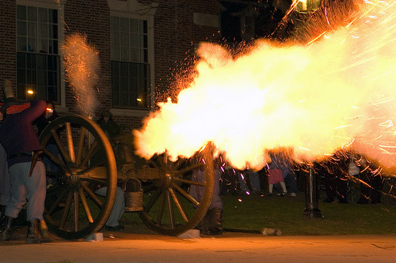
(위 사진에서는 점화구로 일부 역류하는 화약 불꽃도 보이네요. 관광객들 모아놓고 한번 제대로 고증해서 사격 시범을 보이는 모양인데요.)
이렇게 힘들게 쏘았는데, 저 위에 Sharpe 소설 속의 인물인 로젠데일 경이 본 것처럼 맥없이 진흙만 한무더기 튕기고 끝나면 정말 허무할 겁니다. 당시의 roundshot, 즉 폭발하지도 않는 쇳덩어리 포탄이 무슨 위력일까 싶지만, 당시의 전투 대형인 밀집 보병대에는 큰 위력을 발휘했습니다. 마치 볼링 레인에 오밀조밀 몰려있는 볼링핀을 볼링공으로 쳐내는 것 같은 것이지요. 실제로 당시 대포알들은 볼링공처럼 병사들을 쓰러뜨렸습니다. 즉, 공중을 날아가며 병사들을 두동강 내놓는 것이 아니라, 땅에 부딪혀 퉁퉁 튕겨나가며 사람을 잡는 경우가 더 많았습니다. 사실 그럴 것이, 저 멀리 1km 떨어진 1.7m 짜리 표적을 노 바운드로 맞춘다는 것은 정말 어려운 일일 테니까요. 그래서 특히 부드러운 진흙이 많은 전쟁터는 포병대가 활동하기에는 영 좋지 않은 곳이었습니다.
그러니까 포격의 효과를 극대화하기 위해서는, 적병들을 오밀조밀하게 밀집시켜놓아야 합니다. 그런데, 영국군처럼 2열 횡대로 진격해오는 적병들에게는, 이런 대포 공격이 큰 피해를 입힐 수가 없습니다. 아무리 잘 맞춰도, 고작 2명을 잡을 뿐이니까요. 적군은 당연히 적 포병 앞에서는 횡대로 전개할 겁니다. 적군이 횡대로 전개하려고 하면, 그걸 강제로라도 뭉쳐놓고 나서 대포알로 요절을 내야 합니다.
이렇게 산개한 적 보병들을 볼링핀처럼 모아놓는 역할을 한 것이 바로 기병이었습니다. 머스켓 소총을 들고 산개한 보병들은 칼과 창으로 무장하고 바람처럼 달려드는 기병들의 밥이었습니다. 당시처럼 분당 발사 속도 3발에, 사정거리도 짧은 머스켓 소총을 든 병사들이 기병의 위협에 효과적으로 대항하기 위한 유일한 방법은 사격형의 밀집 방진으로 뭉치는 것 뿐이었습니다. 이렇게 뭉치면, 그때 포병들이 볼링공을 들고 레인에 서게 되는 것이지요.
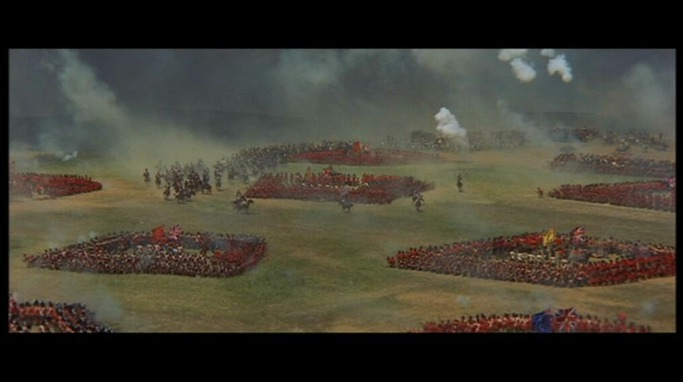
이렇게, 기병과 보병과 포병은 서로 유기적으로 도와야 했습니다. 나폴레옹의 종말을 결정지은 워털루 전투 과정을 보면, 전날 내린 폭우로 인해 땅이 질척거려서 프랑스 포병의 활동이 제약되었고, 네이 원수의 판단 착오로 포병의 지원도 없이 기병 단독의 돌격이 이루어지는 등, 기/보/포병이 다 따로 놀았다는 것을 아실 겁니다. 나폴레옹의 장기를 발휘하지 못하는 상황에서는, 천하의 나폴레옹도 수적인 열세를 극복하지 못했던 것이지요.